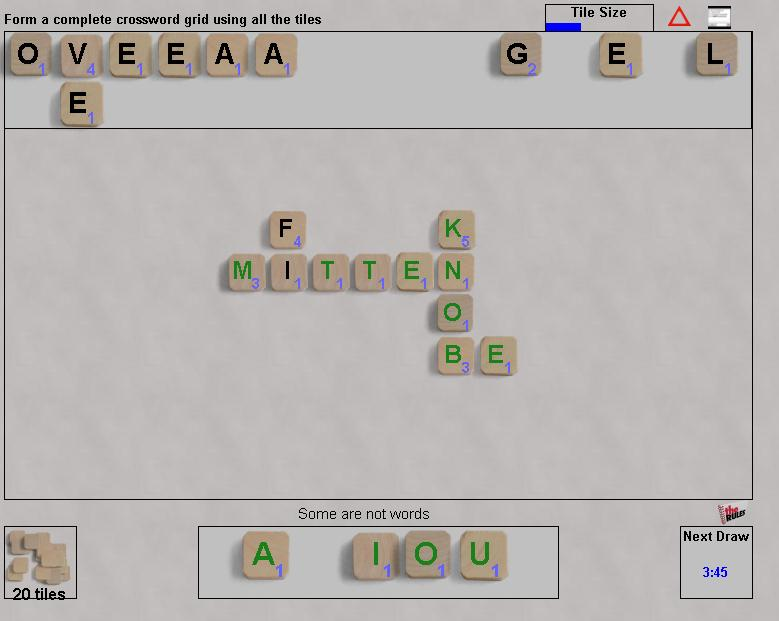

|
|
|
All players play simultaneously, each to complete their own crossword grid. The game ends when all tiles have been place by some player, at which point the highest scoring grid wins. The twist is that all players have the same letters. You can't see the other player's words; only the overall shape of their grid and their score. Play starts with 20 letters; the remaining 20 letters are drawn 2 at a time. Whenever any player completes their grid, all players receive the next two letters from the draw pile. Players are free to break up and rearrange their grid at any time, including breaking up a high scoring grid to (eventually) create a better one. The highest value is remembered and is used in the scoring. Stuck?
|  |
| Go to BoardSpace.net home page |